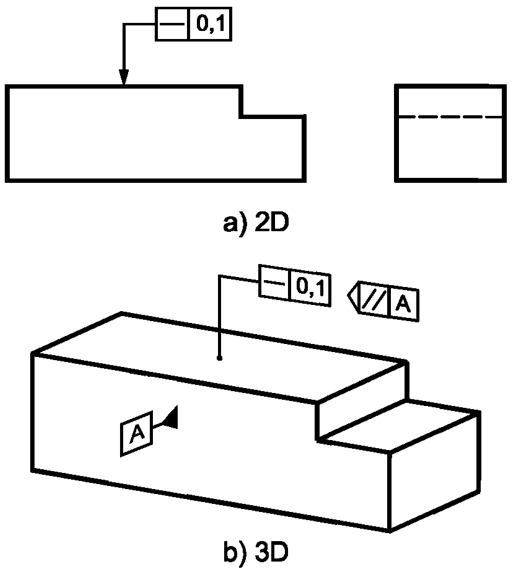
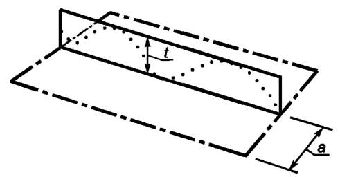
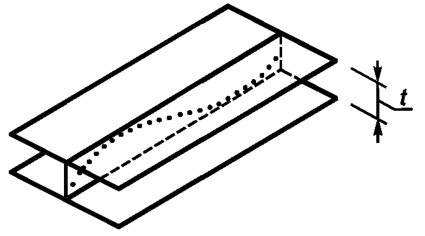
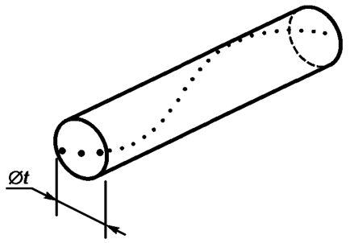

Выявленная линия на нормируемой поверхности в любой плоскости, параллельной плоскости проекции, на которой указан знак, см. рисунок (а) ниже, или базовой плоскости А , см. рисунок (b) ниже, должна быть расположена между двумя параллельными прямыми, расстояние между которыми равно 0,1.
Поле допуска ограничено двумя параллельными прямыми, расстояние между которыми равно значению допуска t, и лежащими в плоскости, ориентированной в указанном на чертеже направлении, см. рисунок ниже

Выявленная образующая цилиндрической поверхности должна располагаться между двумя параллельными плоскостями, расстояние между которыми равно 0,1, см. рисунок ниже.
Примечание — Определение выявленной образующей нестандартизовано.
Поле допуска ограничено двумя параллельными плоскостями, находящимися друг от друга на расстоянии, равном значению допуска t , см. рисунок ниже

Выявленная средняя линия нормируемой цилиндрической поверхности должна быть расположена в пределах цилиндрической области, диаметр которой равен 0,08, см. рисунок ниже.
Поле допуска ограничено цилиндром, диаметр которого равен значению допуска t, если перед этим значением указан знак диаметра ф, см. рисунок ниже
